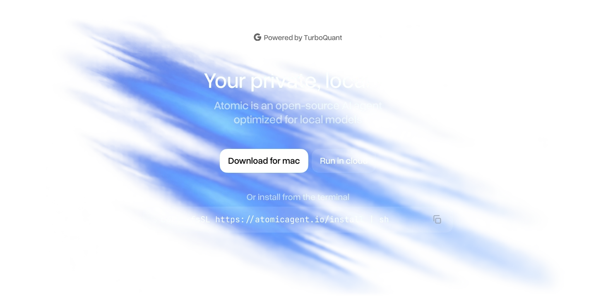
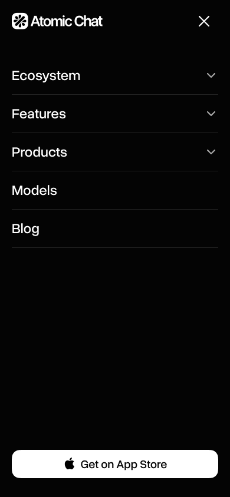
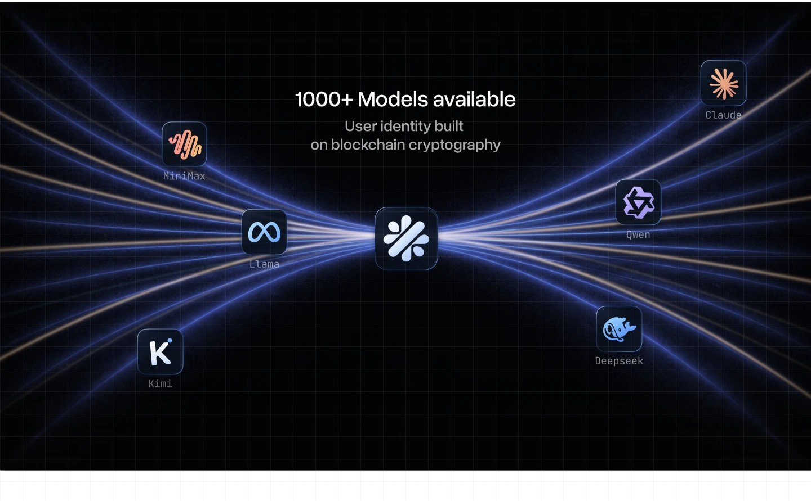

Для Boiler Lab я сделал лендинг Atomic Chat с понятным переходом к скачиванию. Для диплома доработал интерфейс существующего приложения, чтобы от выбора модели до первого ответа можно было дойти в одном окне.

Лендинг / 1440 pxПриложение / первый ответ

Меню / 390 px
Лендинг
Одна страница в трёх размерах: 1440, 768 и 390 px. Меню ведёт к разделам с возможностями, моделями, вопросами и скачиванием.
Приложение
59 экранов и состояний в Figma. Диалоги, модели, облачные подключения, инструменты, проекты, API и настройки.
Прототип
21 состояние, включая первый диалог, загрузку модели, пустой поиск и восстановление после ошибок.
Сценарий пользователя
Первый диалог
Скачивание → выбор модели → запрос → ответ. Ниже можно пройти этот путь по шагам и посмотреть, что происходит, если модели ещё нет или запрос прервался.

01 / Скачивание
Сначала лендинг
С первого экрана можно сразу перейти к скачиванию. Если нужно больше информации, меню ведёт к возможностям, моделям и FAQ.
Список разделён на Desktop и Mobile. Пользователь сначала находит свою платформу, затем выбирает подходящий вариант установки.
Текст запроса остаётся в истории, а под ним появляется состояние генерации. Пользователь видит, что запрос принят, и может остановить ответ из поля ввода.
Сообщение об ошибке остаётся в диалоге рядом с запросом. Retry отправляет его снова, Switch model возвращает к выбору модели. Для ошибки облачного ключа есть отдельный возврат к локальному режиму.
На лендинге модели сходятся к знаку Atomic. В приложении та же идея выражена постоянной навигацией: чат, каталог, подключения и инструменты доступны из одного окна.

Типографика и навигация
Overused Grotesk для интерфейса, JetBrains Mono для команд и технических значений. Сайдбар показывает активный раздел, иконки Vuesax выдержаны в одном начертании.
Фон и поверхности
Тон отделяет фон, панели, поля и кнопки. На лендинге белая кнопка выделяет скачивание.
Состояния
Обычное, выбранное, загрузка, пустой результат и ошибка. Статус сопровождается текстом и действием.
План касается сайта. Десктопное приложение остаётся отдельной частью проекта.
Структура страницы
Первый экран собрать в Zero Block: иллюстрация отдельным слоем, заголовок текстом, скачивание кнопкой. Возможности и каталог разнести по блокам. В FAQ раскрываются ответы, в подвале ссылки сгруппированы. Форму не добавляю в основной сценарий.
Ширины и ресурсы
Кроме 1440, 768 и 390 px проверить 320, 480, 640, 960 и 1200 px. Уточнить поля, переносы и позиции изображений. Логотип и простые иконки подготовить в SVG, крупные иллюстрации оптимизировать, у шрифтов проверить лицензию.
Перед публикацией
Сверить названия Atomic Chat и Atomic Agent, адрес установки и обещания о моделях и партнёрах. Проверить ссылки, якоря, закрытие мобильного меню, клавиатурный фокус, контраст, загрузку и превью ссылки. Для сложных эффектов подготовить статичный вариант.